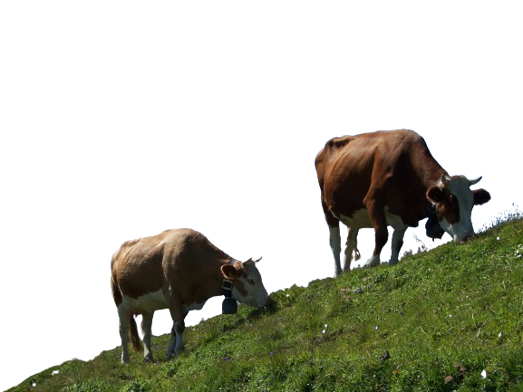

1400s to 1500s
Inca civilization grew over 200 varieties of potato in Andes
highlands using terraced farms, irrigation, crop rotation to
maximize yields
15th Century
Spanish colonization brought diary cows and cheesemaking knowledge
to the Quito region
1560s
Indigenous cooks in Quito mix boiled and mashed yellow potatoes
with fresh cheese
1680s
In Loja region potato patties with fresh cheese emerged as a
specialty dish
